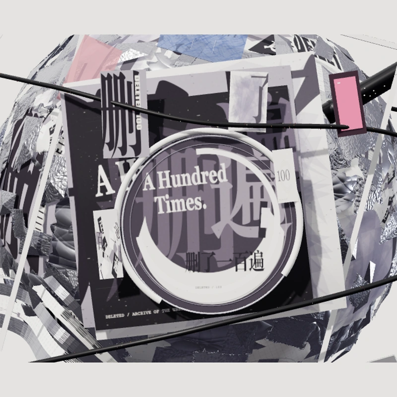
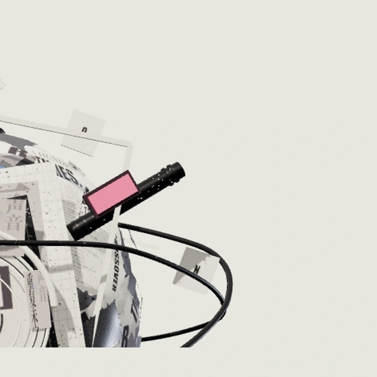
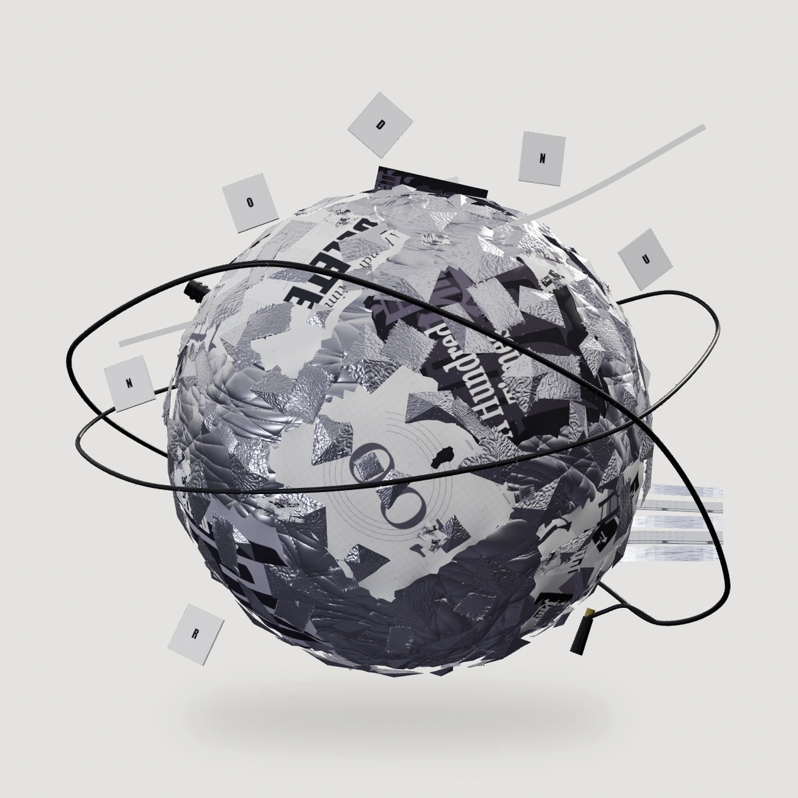

OBJECT 002 / A STUDY IN PAPER & SOUND
错频CROSSOVER
把重复的声音，折成不同的形状。
黑白叠纸、银色碎片，和一根不肯闭合的轨道。
CONCEPT EDITION

正在展开这件纸上雕塑…
THE MATERIAL LANGUAGE
一颗星球，
十一层未完成。
从你提供的图像中保留最鲜明的关系：高反差的黑白印刷、层叠银箔、居中的圆形唱片标签、斜穿的黑色环线、漂浮字块，以及克制的粉蓝信号。
它是一件独立的概念作品，不是园林星球的换色版。当前支持旋转、分层与视角保存；暂未加入人物漫游或文章地标。
工作名「错频」用于区分作品。造型根据本轮参考重新制作，未复制艺人署名、封面水印或原始图像。预览与封面来自同一套真实三维几何。


